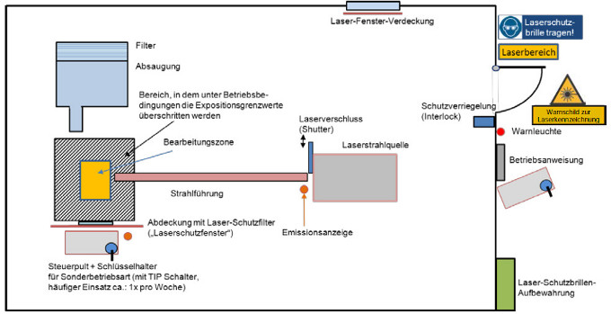
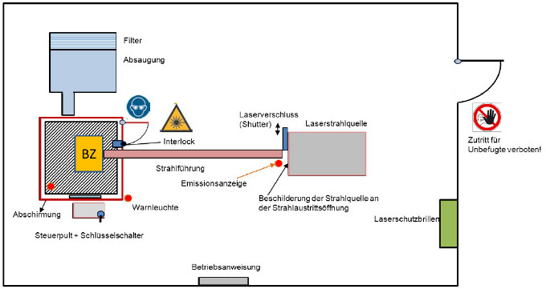

In den Abbildungen A3.1 und A3.2 werden Beispiele zur Kennzeichnung und Ab-grenzung von Türen vor Laserbereichen und von begehbaren Laserbereichen darge-stellt.

Abb. A3.1 Kennzeichnung und Abgrenzung des gesamten Raumes als Laserbereich für industrielle Anwendungen. Bei anderen Anwendungen kann die Schutzverriegelung an der Eingangstür durch andere Maßnahmen zur Abgrenzung (z. B. schleusenartiger Eingang) ersetzt werden.

Abb. A3.2 Kennzeichnung und Abgrenzung eines begehbaren Raumes mit innen liegendem Laserbereich für industrielle Anwendungen.